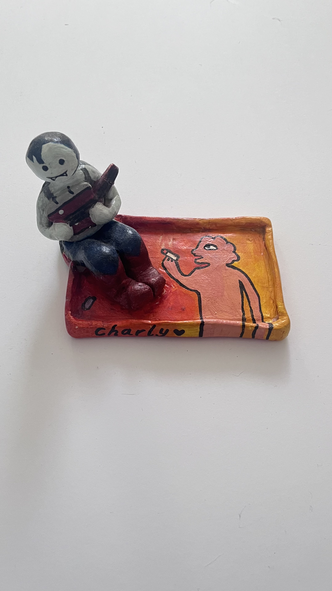

Marcy and Prismo by Navu

quote here
main text here
Artifact Metadata
| Type | Description |
|---|---|
| Name | |
| Collection | |
| Origin | |
| Date | |
| Location | |
| Condition | |
| Colour | |
| Tags |
Marceline the Vampire Queen Handmade Trinket Tray
I remember the patience it took to get Marceline’s bass axe to sit just right in her hands. There’s something about her character—the way she carries her history through her music—that I’ve always connected with. Painting my own name on the front, 'Charly' with that little heart, felt like I was officially claiming this little corner of my desk.
I kept this piece because it represents a time when I was really leaning into my own creativity, making things that were purely for my own joy. The orange-yellow glow on the tray reminds me of sunset light. It’s a sturdy little object, and every time I drop my rings or coins into it, I’m reminded of the version of myself that sat down with a lump of clay and decided to turn a character I love into something I can touch and use every day.
Artifact Metadata
| Type | Description |
|---|---|
| Artifact ID | OBJ-CRFT-MARC-01 |
| Title | Marceline the Vampire Queen Handmade Trinket Tray |
| Category | Personal Effects / Handmade Crafts |
| Physical Description | A rectangular, hand-molded clay tray with a three-dimensional figure of Marceline attached to the left rim. Marceline is depicted in her signature grey skin, holding her red bass axe, wearing dark blue pants and red boots. The base of the tray features a painted orange and yellow gradient background with a black-outlined character silhouette holding an object. The name "Charly" followed by a black heart is painted on the front edge. |
| Condition | Good/Handmade. Like the Calcifer dish, this piece has a charming, folk-art aesthetic with visible brushwork. The clay shows organic, uneven edges that emphasize its handcrafted origin |